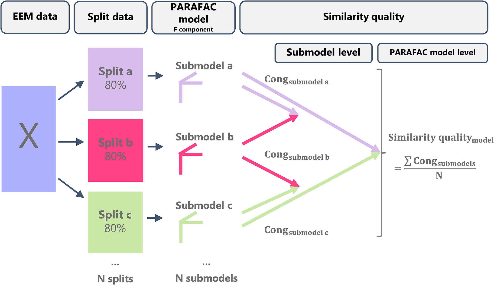
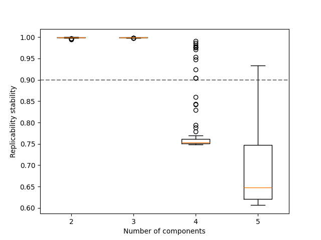
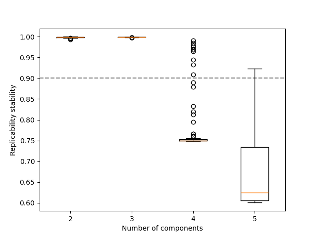

Note
Go to the end to download the full example code.
Replicability analysis¶
This example desrcibes how replicability of patterns can be used to guide the component selection process for PARAFAC models [AKA+22, FFHBR24, YLH+24].
This process evaluates the consistency of the uncovered patterns by fitting the model to different subsets of the data. The rationale is that if the appropriate number of components is used, the uncovered patterns should be consistent. This can be seen as an extension of split-half analysis where a higher number of smaller subsets of the input are removed.
Imports and utilities¶
import matplotlib.pyplot as plt
import numpy as np
import tensorly as tl
from tensorly.decomposition import parafac
import sklearn
from sklearn.model_selection import RepeatedKFold
import tlviz
rng = np.random.default_rng(1)
To fit PARAFAC models, we need to solve a non-convex optimization problem, possibly with local minima. It is therefore useful to fit several models with the same number of components using many different random initialisations.
def fit_many_parafac(X, num_components, num_inits=5):
return [
parafac(
X,
num_components,
n_iter_max=1000,
tol=1e-8,
init="random",
linesearch=True,
random_state=i,
)
for i in range(num_inits)
]
Creating simulated data¶
We start with some simulated data, since then, we know exactly how many components there are in the data.
cp_tensor, dataset = tlviz.data.simulated_random_cp_tensor((30, 40, 25), 3, noise_level=0.3, labelled=True)

Illustration of the replicability check, taken from [FFHBR24].
The replicability analysis boils down to the following steps:
Split the data in a (user-chosen) mode into \(N\) folds (user-chosen).
Create \(N\) subsets by subtracting each fold from the complete dataset.
Fit multiple initializations to each subset and choose the best run according to lowest loss (total of \(N\) best runs).
Compare, in terms of FMS, the best runs across the different subsets to evaluate the replicability of the uncovered patterns (\(\binom{N}{2}\) comparisons).
Repeat the above process \(M\) times (user-chosen), to find a total of \(M \binom{N}{2}\) comparisons.
Splitting the data¶
splits = 5 # N
repeats = 10 # M
models = {}
split_indices = {} # Keeps track of which indices are used in each subset
for rank in [2, 3, 4, 5]:
print(f"{rank} components")
rskf = RepeatedKFold(n_splits=splits, n_repeats=repeats, random_state=1)
models[rank] = [[] for _ in range(repeats)]
split_indices[rank] = [[] for _ in range(repeats)]
for split_no, (train_index, _) in enumerate(rskf.split(dataset)):
repeat_no = split_no // splits
train = dataset[train_index]
train = train / tl.norm(train) # Pre-process the tensor without leaking info from other folds
current_models = fit_many_parafac(train.data, rank)
current_model = tlviz.multimodel_evaluation.get_model_with_lowest_error(current_models, train)
models[rank][repeat_no].append(current_model)
split_indices[rank][repeat_no].append(train_index) # Keeping track of the indices of each fold
2 components
3 components
4 components
5 components
Often, the mode one will be splitting within refers to different samples Depending on the use-case, it might be deemed reasonable to retain the distributions of some properties in each subset. For this goal, RepeatedStratifiedKFold can be used.
Each subset might require certain pre-processing. It is important to pre-process
each subset in isolation to avoid leaking information from the omitted part of the input.
For example, in this case we normalize each subset to unit norm independently.
Also, notice that for train_index, _ in rskf.split(dataset): is embarrassingly parallel.
Computing and plotting factor similarity¶
Here, we are skipping the mode we split (mode=0).
replicability_stability = {}
for rank in models.keys():
replicability_stability[rank] = []
for repeat_no, current_models in enumerate(models[rank]):
for i, cp_i in enumerate(current_models):
for j, cp_j in enumerate(current_models):
if i >= j: # include every pair only once and omit i == j
continue
fms = tlviz.factor_tools.factor_match_score(cp_i, cp_j, consider_weights=False, skip_mode=0)
replicability_stability[rank].append(fms)
ranks = sorted(replicability_stability.keys())
data = [np.ravel(replicability_stability[r]) for r in ranks]
fig, ax = plt.subplots()
ax.axhline(0.9, linestyle="--", color="gray")
ax.boxplot(data, positions=ranks)
ax.set_xlabel("Number of components")
ax.set_ylabel("Replicability stability")
plt.show()

Here, we can observe that over-estimating the number of components results in not replicable patterns, indicated by low FMS.
Computing and plotting factor similarity (alt.)¶
There is an alternative way to estimate the replicability of the uncovered patterns that includes the mode we are splitting within [ErdHosCT+25]. When comparing two factorizations in terms of FMS, we can include the previously skipped factor by using only the indices present in both subsets.
replicability_stability_alt = {}
for rank in models.keys():
replicability_stability_alt[rank] = []
for repeat_no, current_models in enumerate(models[rank]):
for i, cp_i in enumerate(current_models):
for j, cp_j in enumerate(current_models):
if i >= j: # include every pair only once and omit i == j
continue
weights_i, (A_i, B_i, C_i) = cp_i
weights_j, (A_j, B_j, C_j) = cp_j
indices_subset_i = list(split_indices[rank][repeat_no][i])
indices_subset_j = list(split_indices[rank][repeat_no][j])
common_indices = list(set(indices_subset_i).intersection(set(indices_subset_j)))
indices2use_i = []
indices2use_j = []
for common_idx in common_indices:
indices2use_i.append(indices_subset_i.index(common_idx))
indices2use_j.append(indices_subset_j.index(common_idx))
A_i = A_i[indices2use_i, :]
A_j = A_j[indices2use_j, :]
fms = tlviz.factor_tools.factor_match_score(
(weights_i, (A_i, B_i, C_i)), (weights_j, (A_j, B_j, C_j)), consider_weights=False
)
replicability_stability_alt[rank].append(fms)
ranks = sorted(replicability_stability_alt.keys())
data = [np.ravel(replicability_stability_alt[r]) for r in ranks]
fig, ax = plt.subplots()
ax.axhline(0.9, linestyle="--", color="gray")
ax.boxplot(data, positions=ranks)
ax.set_xlabel("Number of components")
ax.set_ylabel("Replicability stability")
plt.show()

common_indices contains the indices (e.g. samples) present in both subsets,
but since the position of each index can change (e.g. sample no 3 is not guaranteeed at
the third position in all subsets as the first and second samples might be omitted) we need to
utilize the indices in the original tensor input.
Similar results can be also observed here in terms of the replicability of the patterns.
Total running time of the script: (0 minutes 58.961 seconds)